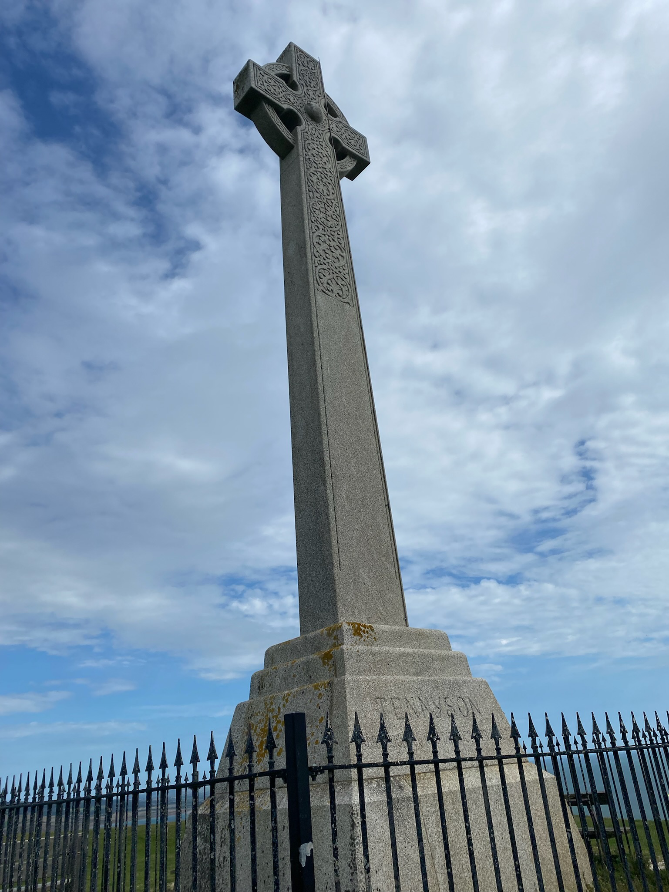

Exploration expedition exhibition
On Thursday 17th August 2023, the Scouts and I set out on an
expedition. We walked across the Isle of Wight from Totland to the
Tennyson monument, and back. It was a long walk, and I got in 29,069
steps that day; which is 18.71 km (11.63 miles)
As we went, we saw many tourist attractions and such - we saw the
Needles, Needles pleasure park, Old Battery, New Battery, walked up
the hill towards the Needles.
